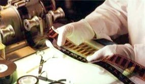
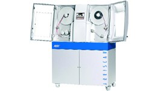
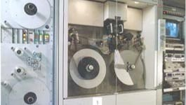
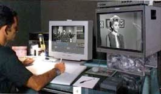

RICERCA E VECCHI SISTEMI
Quando si comincia a pensare ad un restauro, solitamente, è perchè il negativo originale è prossimo alla completa distruzione. Tutto ciò spesso accade per l'incuria a cui il materiale è stato sottoposto, nei tanti anni trascorsi dal giorno che fu girato ad oggi. Alcuni film sono stati, per lunghissimi anni, abbandonati in sottoscala di depositi umidi e polverosi. Altri sono stati conservati in edifici di lamiera esposti al sole estivo e al gelo invernale. Tutto ciò, ovviamente, non può che accellerare il normale procedimento di invecchiamento a cui la pellicola è sottoposta negli anni. Si possono così formare muffe, sindromi acetiche, colour-fading e molto altro. Oltre alla completa disidratazione della pellicola tale da renderla fragile come un sottilissimo strato di vetro. Solitamente quando si arriva a questo punto non c'è più molto da fare se non cercare, da qualche altra parte, una copia meglio conservata da cui ripartire. Finora, in tutti i restauri da me eseguiti, buona parte della prima fase di ricerca dei migliori materiali esistenti è fatta dal nostro "Consulente per il restauro" Carlo Cotta. Egli si coordina sempre con il responsabile del restauro, gli aventi diritto e le varie cineteche italiane ed estere per ottenere le scene meglio conservate, se il negativo originale non è più lavorabile. Tutto, al fine di ottenere la migliore qualità generale del restauro. Dopo questo importante lavoro di ricerca può partire il reale lavoro di restauro foto-chimico, che ancora gioca un ruolo importante prima dell'inizio di quello digitale. In questa fase, una equipe di specialisti, provvede a verificare lo stato fisico dei materiali, pulire al solvente la pellicola, rifare le giunte che non sopporterebbero il processo di scanning seguente e tutte quelle altre piccole, ma importanti, lavorazioni che preparano la pellicola ad affrontare lo step successivo: la digitalizzazione.

Fig.1 - Tecnico intento a verificare la completezza del negativo.
LA DIGITALIZZAZIONE
Il materiale adesso è pronto per essere scansionato. Dipenderà dalla necessità di quanti interventi sul film, richiedano la lavorazione in digitale, per decidere la quantità di pellicola che verrà scansionata. La quantificazione spetta a me, al nostro consulente e al direttore del restauro. Sempre di più, ora, con le tecnologie all'avanguardia di cui disponiamo, possiamo permetterci di allargare il campo d'azione del restauro digitale. Una volta, complice l'elevato costo delle lavorazioni digitali, cercavamo di focalizzare i nostri interventi solo sulle scene che, con i sistemi tradizionali, sarebbero stati impossibili da eseguire. Ora, grazie anche all'incredibile sviluppo delle lavorazioni di Digital Intermediate, i costi industriali si sono abbassati, con un conseguente aumento di mercato anche per le lavorazioni di restauro. Come certamente avrete potuto vedere nelle News, si parte finalmente con il primo restauro totale di un film in digitale. E altri ne verranno in futuro. Ma torniamo alla tecnica di base. Fondamentalmente sono due i sistemi per scansionare la pellicola alla risoluzione cinematografica. Uno, più lento ma più stabile, lo scanner vero e proprio.Tecnologia inventata molto tempo fa per le lavorazioni di effetti digitali ma valida anche per il restauro. È caratterizzata da una velocità molto bassa (i moderni scanner possono raggiungere il secondo a fotogramma) ma da una eccezionale stabilità di immagine, grazie anche alla doppia registrazione della griffa e della controgriffa. L'altro, il telecinema, più veloce, ma che risente delle oscillazioni dovute al passaggio delle giunte sul pattino di scorrimento. Nei moderni modelli permette di scansionare oltre alla risoluzione PAL, anche a 2k in tempo reale e a 4k a 6 fotogrammi al secondo. A seconda delle necessità può servire lo scanner con uno, l'altro o entrambi i due sistemi.

Fig.2 - Lo scanner ARRI Scan dell’ARRI©

Fig.3 - Il telecinema Spirit DataCine della Thomson©
Il formato grafico di scansione che utilizziamo prevalentemente, sia per gli effetti che per il restauro, è il DPX. Questo formato ha 10 bit di profondità colore, per ogni singolo canale RGB nello spazio colore logaritmico. Produce files 2k (2048x1556) di risoluzione, che pesano ognuno circa 13 Megabytes, e files 4k (4096x3112), che pesano ognuno circa 51 Megabytes. Ovviamente pensate che un film di circa 100 minuti è formato da 1440 fotogrammi al minuto e quindi da un totale di 144.000 fotogrammi. Se, con una calcolatrice, moltiplicate 144.000 fotogrammi x 13.000.000 bytes ognuno, avrete 1.872.000.000.000 bytes che tradotti in "informatichese" sono circa 1,9 Terabytes. È ovvio che per scansionare tutto questo materiale necessitiamo di uno spazio su disco rigido dove archiviare questa mole di dati, in attesa delle lavorazioni di restauro vere e proprie. Tenete presente inoltre che servirà lo stesso ammontare di spazio, per poter processare il materiale scansionato al fine di poterlo restituire su pellicola alla fine delle lavorazioni. Quindi alla fine necessitano quasi 4 Terabytes di spazio su disco per far fronte ad una lavorazione di restauro di un film intero. Una volta trasformata la pellicola in bytes il successivo step è il restauro vero e proprio.
METTIAMO I PIXEL IN "LAVATRICE"
Il titolo sembrerà un gioco di parole, ma prende spunto dal nome della macchina meccanica per la pulizia della pellicola chiamata appunto "Lavatrice". In un certo senso oggi ai pixel, facciamo esattamente la stessa cosa che prima facevamo alla pellicola. Ovviamente la "lavatrice dei pixel" non è meccanica ma è elettronica, non inquina, non usa solventi chimici, non necessita di aspiratori ed è sufficientemente veloce da poter trattare un rullo da 300 metri in 2 ore e soprattutto ti permette di comparare come era prima della pulizia e come è dopo la stessa. Il tutto, chiaramente, si effettua su di un computer, possibilmente, il più potente possibile, per velocizzare tutte le operazioni matematiche che, il software, deve fare per riconoscere, in totale autonomia, lo sporco da rimuovere. Il procedimento è, per certi versi, semplicissimo. I files vengono importati tramite network Gigabit (120 Megabytes al secondo) nel computer. Successivamente, vengono definiti i parametri di sporco da rimuovere da parte di un operatore. Per esempio, la pellicola presenta "spuntinature" sia bianche che nere di media e piccola grandezza, l'operatore imposterà i relativi controlli al software e lascerà partire l'analisi e la rimozione da parte dello stesso. In addizione alla workstation principale, potrebbe essere necessario aggiungere altri computer per poter incrementare le prestazioni
Fig.4 - Il sistema REVIVAL della DAVINCI©

Fig.5 - La fase finale - Il "manual retouching"
I sistemi che usiamo qui a Cinecittà Digital Factory sono i Revival della DAVINCI© . Le postazioni sono in grado di pulire tra i 6 e gli 8 fotogrammi al secondo alla risoluzione 2K. Dopo aver tolto, automaticamente ed in fretta, le spuntinature, processo che fino a 5-6 anni fa veniva fatto quasi interamente a mano, si passa alla eliminazione semi-automatica di ogni altro possibile difetto della pellicola. Righe, flickering, instabilità dell'immagine, fotogrammi rotti o mancanti, salti giunta o eccessiva granulosità della pellicola. Dopo aver fissato semi-automaticamente tutti o parzialmente tutti questi aspetti, si passa alla fase di "manual-retouching". Forse questo è il passaggio più importante ai fini del risultato globale del restauro. Nella mia vasta esperienza di restauri cinematografici, vi posso dire che i software automatici di pulizia digitale sono migliorati con passi da gigante in questi ultimi 10 anni. Ancora non possono risolvere tutte le problematiche che incontriamo durante il vero restauro di un film ma riducono di più dell' 80% l'intervento umano. È quindi fondamentale la tecnica, l'occhio e la sensibilità dell'operatore, nella fase manuale di ritocco. Ritocchi grossolani o tecnicamente poco efficaci possono compromettere anche totalmente la qualità finale del lavoro, distraendo il pubblico con macroscopiche e quindi visibili, imprecisioni. Molti sono gli aneddoti che vi potrei raccontare su alcuni dei più importanti restauri da me eseguiti, ma ve ne parlerò dopo, alla fine del nostro percorso. Avanti adesso con il prossimo step: il Recording.
I LASER A SERVIZIO DEL CINEMA
Come tutti voi saprete, il laser, ormai viene usato in centinaia di campi differenti. Medicina, edilizia, spettacolo e perché no anche nel cinema. Tralasciando i sistemi "laser-based" per fare misurazioni ultra-precise sul set, nel mondo degli effetti digitali, concentriamoci sul sistema di registrazione laser della pellicola da parte dei moderni Recorder. I Recorder sono l'ultimo anello della catena produttiva, sia di un effetto digitale che di un restauro, perchè servono a restituire su pellicola i bytes prodotti nelle lavorazioni computerizzate. La loro qualità oggi, è praticamente perfetta tanto, che alle risoluzioni elevate, +4K, è impossibile a chiunque poter notare differenze tra l'originale e il duplicato. Tutto questo grazie anche al pionierismo della Kodak©, che nella metà degli anni '90 cominciò a produrre il Lightning Recorder, primo esempio di recorder laser. Cinecittà fu una tra le prime 6 società al mondo che lo acquistò con l'opzione di poter avere subito il Lightning II appena fosse stato pronto. Il Lightning II era leggermente più piccolo, più leggero e più veloce del "fratellone" e poteva imprimere un fotogramma 2k in 5 secondi e uno a 4K in 7 secondi. Tempi velocissimi per l'epoca. Nel 2001 Cinecittà decise di passare ad un modello dell'ARRI molto più piccolo, molto più leggero, molto più veloce e molto più facile da manutenere: l'ARRI Laser. Ora dopo vari upgrades il nostro ARRI può recordare 1 fotogramma 2k in meno di 2 secondi e uno 4k in meno di 3,5.